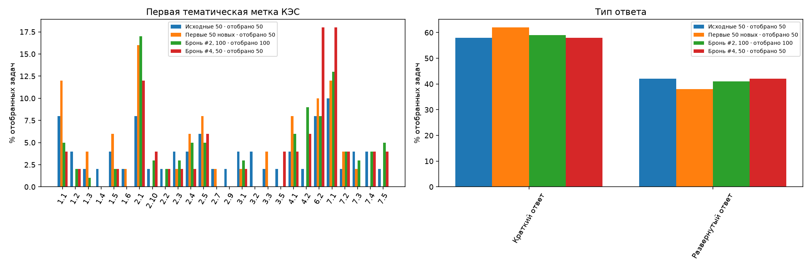
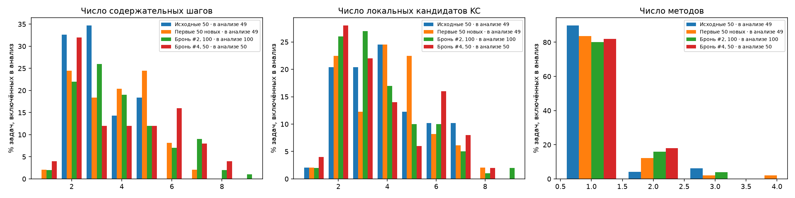
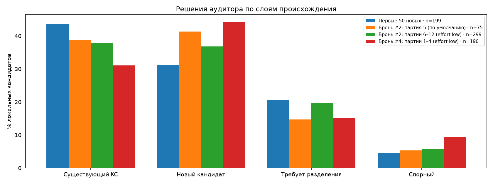
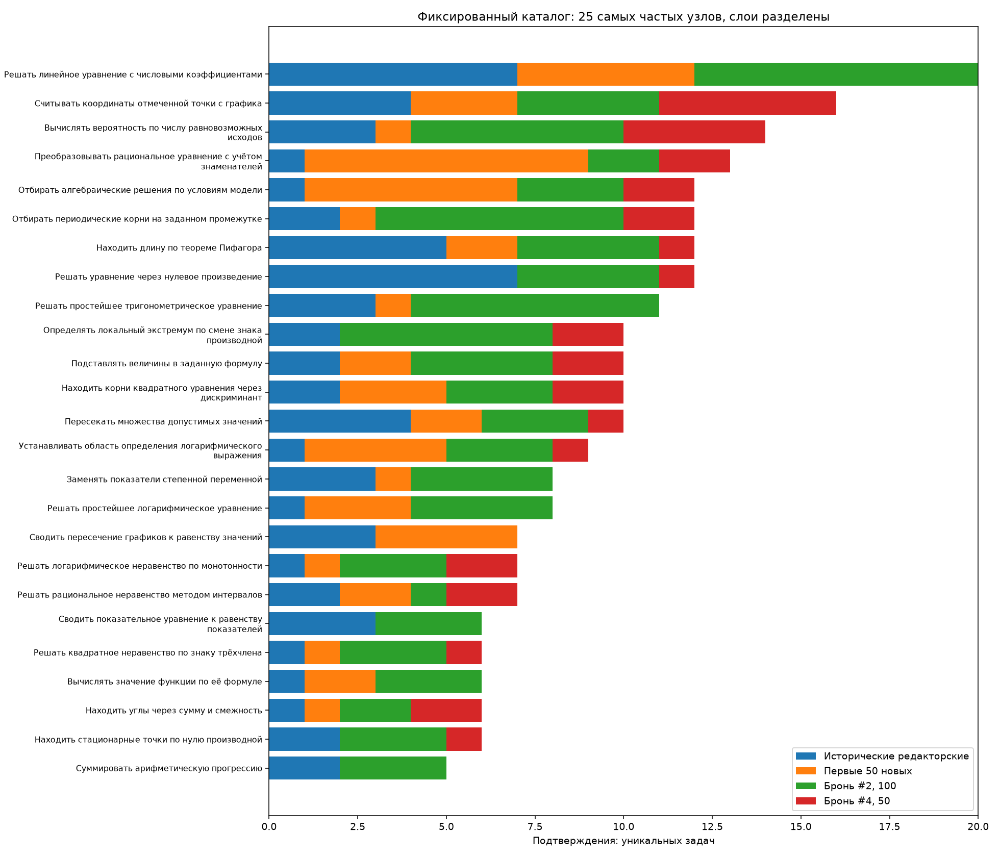

# ФИПИ: промежуточная накопленная контрольная точка 250 задач Расчёт по сохранённым разборам и аудитам, без новых модельных запросов. Корпус — [EDA-200](../2026-11-09-fipi-checkpoint-200-v1/report.md) и первые 50 задач брони #4 Bogdan108 (партии 1–4 из 8). Определения метрик — как в [EDA-100](../../runs/2026-11-02-fipi-extension-150/derived/checkpoint-100-v1/report.md) и EDA-200: узел каталога считается подтверждённым в задаче, если аудитор поставил `match` без блокировки; частоты — число задач, а не упоминаний; единичный узел — подтверждён ровно в одной включённой задаче. Внешнего эталона нет; статус `solved` не является оценкой точности. ## 1. Слои и готовность | Слой | Выбрано | Полных пар | В частотах | Подтверждённых узлов | Единичные / узлы | Несопоставленные кандидаты | |---|---:|---:|---:|---:|---:|---:| | Исходные 50: редакторские связи | 50 | 50 | 49 | 136 | 101/136 | 0/194 | | Первые 50 новых (запуск 2026-11-02): агентный аудит | 50 | 50 | 49 | 48 | 30/48 | 110/197 | | Бронь #2, 100 задач (партии 5–12): агентный аудит | 100 | 100 | 100 | 65 | 34/65 | 232/374 | | Бронь #2, партия 5: Opus, уровень рассуждений по умолчанию | 15 | 15 | 15 | 24 | 19/24 | 46/75 | | Бронь #2, партии 6–12: Opus, effort low | 85 | 85 | 85 | 54 | 29/54 | 186/299 | | Бронь #4, первые 50 задач (партии 1–4): Opus, effort low | 50 | 50 | 50 | 40 | 27/40 | 131/190 | | Все новые 200: агентный аудит | 200 | 200 | 199 | 86 | 28/86 | 473/761 | | Смешанный накопленный корпус 250 | 250 | 250 | 248 | 139 | 49/139 | 473/955 | Слой «Исходные 50» содержит редакторские связи основного ассистента; остальные слои — независимый агентный аудит. Смешанный корпус объединяет разное происхождение, поэтому его частоты описательные. Бронь #4 выполнена наполовину: партии 5–8 (ещё 50 задач) не входят в эту точку. ## 2. Что добавилось - Бронь #4 добавила 50 включённых задач. Узлов каталога, подтверждённых в них: 40; из них не подтверждённых в EDA-200: 0 (нет). - Подтверждённых узлов в смешанном корпусе: 139 (EDA-200) → 139 (EDA-250); единичных: 55/139 → 49/139. - Кандидаты брони #4, которым аудитор не нашёл узла (`new_candidate`): 84. Это локальные предложения отдельных задач, а не число уникальных новых навыков: межзадачной консолидации не было. ## 3. Изменения относительно EDA-200 по тем же определениям | Показатель | Бронь #2, партии 6–12 (effort low) | Бронь #4, партии 1–4 (effort low) | Бронь #2, 100 | Все новые 200 | |---|---:|---:|---:|---:| | Существующий KC | 113/299 (38%) | 59/190 (31%) | 142/374 (38%) | 288/763 (38%) | | Новый кандидат | 110/299 (37%) | 84/190 (44%) | 141/374 (38%) | 287/763 (38%) | | Требует разделения | 59/299 (20%) | 29/190 (15%) | 70/374 (19%) | 140/763 (18%) | | Спорный | 17/299 (6%) | 18/190 (9%) | 21/374 (6%) | 48/763 (6%) | | Медиана шагов | 3 | 4 | 3,5 | 4 | | Медиана локальных KC | 3 | 3 | 3 | 3 | | Задачи с неполным сопоставлением | 75/85 (88%) | 49/50 (98%) | 90/100 (90%) | 184/199 (92%) | Бронь #4 исполнена той же моделью и с тем же уровнем рассуждений, что партии 6–12 брони #2 (`claude-opus-5-5`, `effort: low`), по той же методике и тем же каталогом. Различия между этими слоями не объясняются моделью, но могут объясняться составом: задачи брони #4 — отдельный случайный отбор из остатка банка после брони #2 и #3, а выборки малы (85 и 50 задач). В партии 3 брони #4 аудиторы прерывались лимитом API и продолжали работу в том же контексте. [Состав выборки](figures/01-composition.png), [статусы аудита](figures/03-audit-statuses.png). ## 4. Контрольные задачи, исключения и спорные случаи - Контрольные задачи брони #4, сверенные с ожиданиями, записанными до авторских ответов: 12; `match` — 11, `match_after_review` — 1 (E87882 (партия 3)). `match_after_review` означает, что ответ из нескольких пунктов не сравнивается строкой; сравнение сделано после просмотра ответа и слепой проверкой не является. - Приняты после просмотра при статусе автора не `solved`: нет. - Исключены из основных частот смешанного корпуса: - eFF32e: исторический partial или исключение прежней рецензией - C41083: блокирующее замечание аудита - В брони #4 задач с предупреждениями авторов: 11; замечаний аудиторов: 43, из них блокирующих: 0. Спорных решений аудитора (`uncertain`): 18. Подробности — в [карточках](index.html) и [таблице кандидатов](tables/candidates.csv). - Неблокирующие математические замечания аудиторов брони #4: FAAE63, 0B2322, 724631. Они не отменяют сопоставлений KC, поэтому задачи входят в частоты, но ответы этих задач независимым ожиданием не проверялись: - FAAE63 (прямоугольник и перпендикуляр к диагонали): аудитор отметил неточную формулировку обоснования угла в шаге s2 и оценил итог как верный. - 0B2322 (число точек, где производная положительна, по графику функции): автор отнёс точки вблизи экстремумов к участкам монотонности на глаз и ответил 3; аудитор допускает, что x3 — локальный максимум, и тогда ответ 2. - 724631 (задача с пунктами а–в о десятичной записи чисел): текст шага s2 оборван; аудитор отметил, что граничный случай a = 1, b = c = 0 в выводе s2 требует оговорки, и оценил, что на итоговый ответ это не влияет. - Задачи с чтением координат по рисунку (97C4EA, FEE4C3, 6F2D5E, 6FA927, c1936D, 0B2322) зависят от качества изображения; в FEE4C3 автор дополнительно считал пиксели узлов сетки во временной копии рисунка. ## 5. Какие выводы пока невозможны - Это промежуточная точка: бронь #4 выполнена наполовину, и доли слоя «Бронь #4» могут измениться после партий 5–8. - Нельзя оценить точность решений: внешнего эталона нет, контрольные ответы проверены выборочно (3 задачи на партию). - Нельзя считать `new_candidate` новыми уникальными навыками и сравнивать их число между слоями как прирост каталога. - Нельзя приписать различия долей статусов аудита между бронями #2 и #4 исполнителю: модель и уровень рассуждений совпадают, а состав задач различается. - Совместная встречаемость и переходы между узлами — описательные; они не доказывают порядок изучения или зависимость навыков. ## 6. Самопроверки - Пересчёт EDA-100 из тех же записей совпал с сохранённой сводкой: True; частоты: True. - Пересчёт частот узлов на 150 задачах совпал с кратким EDA-150: True (148 включённых задач). - Пересчёт EDA-200 совпал с сохранённой сводкой: True; частоты: True. ## Материалы - [Карточки задач брони #4 и графики](index.html); карточки брони #2 — в [EDA-200](../2026-11-09-fipi-checkpoint-200-v1/index.html); первых 50 новых — в [EDA-100](../../runs/2026-11-02-fipi-extension-150/derived/checkpoint-100-v1/index.html); разборы исходных 50 — в [EDA-50](../../runs/2026-10-31-fipi-50x1/derived/index.html). - Таблицы: [задачи](tables/tasks.csv), [кандидаты](tables/candidates.csv), [частоты](tables/frequencies.csv), [совместная встречаемость](tables/cooccurrence.csv), [переходы](tables/transitions.csv), [состав](tables/composition.csv), [статусы аудита](tables/audit_statuses.csv), [расшифровка КЭС](tables/kes-codebook.csv). - Исполненный ноутбук пересчёта: [review.ipynb](review.ipynb). Входы и хеши: [provenance.json](provenance.json), партии: [batches.json](batches.json). Первая метка КЭС — первая тематическая метка в записи банка, не обязательно главная тема задачи. Метки КЭС и шаблоны — описательные характеристики, не подтверждение одинакового метода.




Исходные 50: EDA-50. Первые 50 новых: EDA-100. Бронь #2, 100 задач: EDA-200.